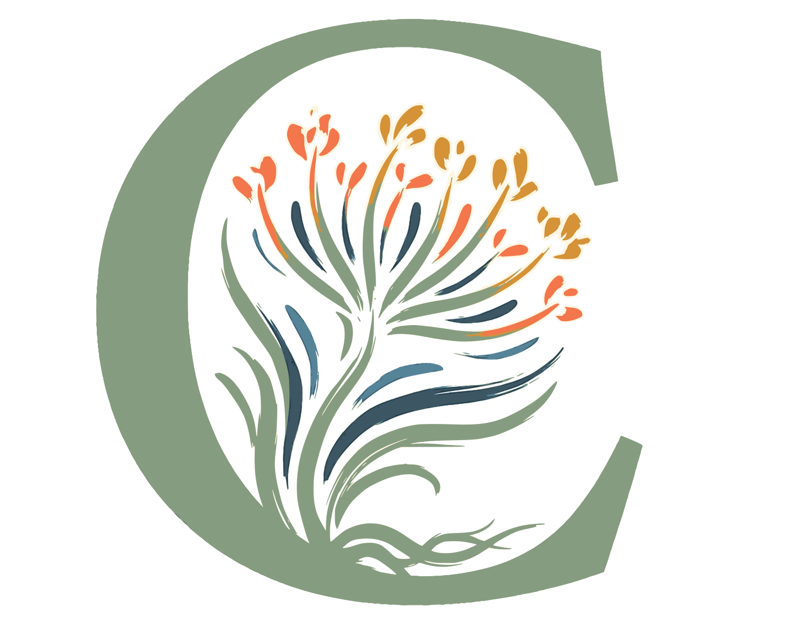

Le nom de la ville contient sa propre qualité : Collorec, c'est coloré ! Au-delà des couleurs visuelles, "être coloré" signifie avoir du caractère, de la diversité (associations, paysages, histoires), et être chaleureux. C'est l'antidote à la morosité.
Vote: colore@collorec.bzh
La noix de terre enracinée qui révèle l'étymologie du nom Collorec (Kolorenn). Un symbole d'ancrage profond et de richesse cachée, où les racines nourrissent la floraison. Une commune aux fondations solides, fière de son étymologie unique, et qui regarde vers l'avenir avec vitalité.
Vote: kolorenn@collorec.bzh